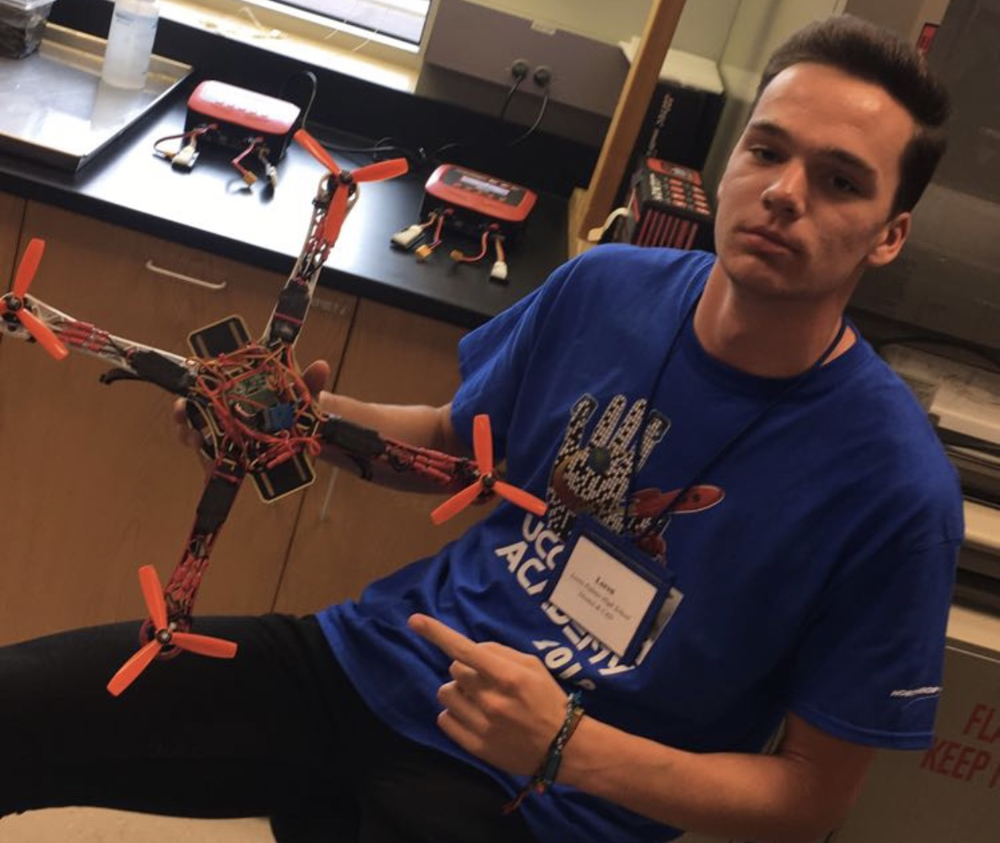

Projects
Senior Design: Replicating Natural Structural Color
Structural color, where vibrant colors are produced through nanostructures instead of pigments, has been researched in artistic and scientific communities. Many biological species have developed structural properties that assist in camouflage, send warning signals, attract mates, regulate body temperature, etc. Structural color showcases the remarkable ingenuity of biological systems in achieving vivid and iridescent colors using limited materials. In contrast to humans, who have an extensive array of pigments and dyes at their disposal, nature employs a relatively small set of "building blocks" to create an astonishing variety of colors. The study of natural structural color holds immense potential for inspiring and advancing nanotechnologies in the field of nanophotonics. The applications to medical solutions, optical sensing, communication, and even defense are broad and promising. By understanding the intricate mechanisms behind natural structural coloration, scientists can gain insights into designing and fabricating artificial nanostructures that exhibit desired optical properties. This interdisciplinary approach, combining biology and nanotechnology will pave the way for innovation in these fields of sensors, displays, and photovoltaics, among others.
I aimed to leverage these principals in my senior design course to study and understand what it would take to replicate structure color inspired by natural organisms. Below is my final poster which was presented to the department.
Autonomous Scale Vehicle
Enrolling in DSC (Data Science) 178 at UCSD opened up a whole new world for me, introducing me to Linux, ROS2, and Docker. As the only non-data science major in the class, I faced a steep learning curve, but the opportunity to work with robots made the process enjoyable. After weeks of acquiring the necessary skills, my team was given the freedom to choose our own project. We decided to focus on implementing an object detection model to identify cars on the track. Our aim was to enhance our robot's capabilities by enabling it to identify and track other cars, allowing it to plan its route effectively, avoid collisions, and potentially even overtake competing vehicles.

Below is the slide deck from my teams final presentation.
Graduate Class Research Proposal: Nanophotonics for Medical Technology
Throughout the course on photonics, I gained a deep understanding of its fundamental concepts and was exposed to state-of-the-art research and technology in this field. Having successfully completed the class, I can now mathematically describe basic phenomena in photonics and apply this knowledge in various multidisciplinary applications. To further showcase my understanding and practical skills, I embarked on a 2-page research proposal project that applies the principles of photonics to a problem that personally interests me.
My slides and proposal are below.
Zinc Oxide Nanoparticle Fabrication
This experiment focuses on the synthesis of metal nanoparticles using solution-based methods and assembling them into films for large-scale applications.Metal nanoparticles, specifically silver and gold, have localized surface plasmon resonances that are dependent on their size and shape and can be excited in the optical range, making them suitable for LSPR-based biosensing in various fields. LSPR sensors are optical devices that detect changes in refractive index at the metal surface, allowing for ultrasensitive detection of molecular events such as protein binding.
Drone Design Challenge
This is a special project to me, primarily because I won a $25 gift card which officially marks my first time as a “paid” engineer! I was tasked with building a drone to transport a small package from one location to another roughly 25 yards away, while flying through and around obstacles. Competing against nearly 50 other students, I won the award for best design, and also was the only student to complete the challenge. I remember this experience fondly as my first time leveraging CAD design and 3D printing to achieve a specific goal. This sparked my interest in drones and resulted in my career as a drone photographer during high school.
Photovoltaic Cell
The process of creating and layering graphene on a microchip to develop a miniature photovoltaic cell involves several crucial steps. Graphene, a single layer of carbon atoms arranged in a hexagonal lattice, exhibits remarkable electrical conductivity and optical properties, making it an ideal material for photovoltaic applications. Here is an overview of the process: Substrate Preparation: The first step involves preparing the microchip substrate on which the graphene will be deposited. The substrate is typically made of a semiconductor material, such as silicon, which provides a solid foundation for the subsequent graphene layers. Graphene Growth: The next step is the synthesis of graphene. One common method is chemical vapor deposition (CVD), where a carbon-containing gas, such as methane or ethylene, is introduced into a high-temperature chamber. The carbon atoms then react and deposit on the substrate, forming a graphene layer. Other techniques, such as epitaxial growth or mechanical exfoliation, can also be employed for graphene synthesis. Transfer Process: After graphene growth, the graphene layer needs to be transferred onto the microchip substrate. This process involves carefully removing the graphene from its growth substrate and placing it onto the target substrate. Various methods, such as polymer-assisted transfer or direct dry transfer, can be used to ensure the successful transfer of the graphene layer without damaging its structure. Graphene Integration: Once the graphene layer is transferred onto the microchip substrate, it is integrated into the device structure. This involves patterning the graphene layer to create specific regions, such as electrodes or active areas, which are essential for the photovoltaic cell's operation. Techniques like lithography and etching are employed to precisely define these regions. Electrical Contacts: To facilitate electrical connections, metal contacts are added to the graphene layer. These contacts enable the flow of electrons within the photovoltaic cell, creating a pathway for the generated electricity to be extracted. Metals like gold or aluminum are commonly used for this purpose, and deposition techniques such as evaporation or sputtering are employed to create the contact regions. Encapsulation: Finally, to protect the delicate graphene layers and the photovoltaic cell structure, an encapsulation layer is applied. This layer acts as a protective barrier against environmental factors, such as moisture or contaminants, which can degrade the performance of the device. Common encapsulation materials include polymers or thin oxide layers.